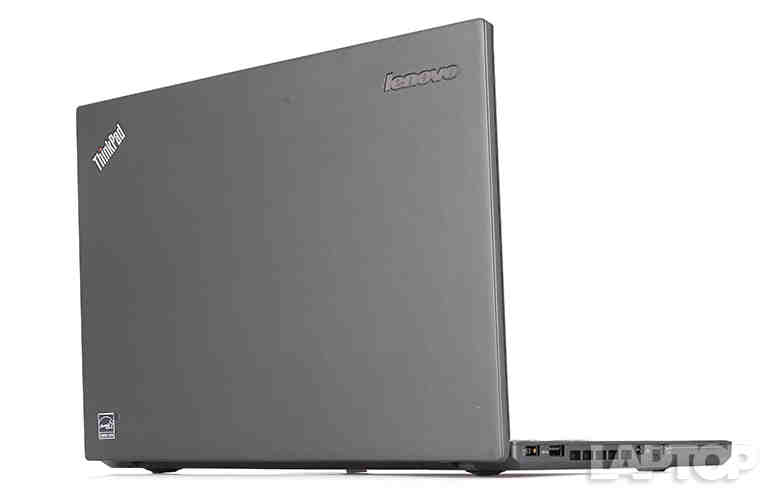
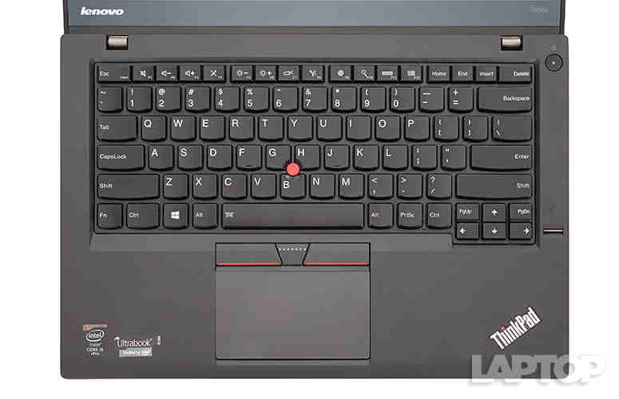
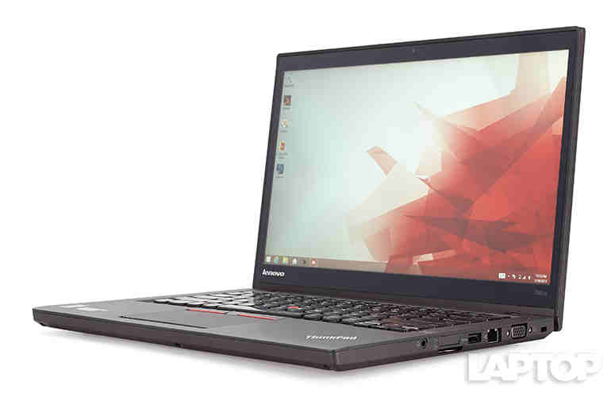

Laptop Lounge
Lenovo ThinkPad T450s Review

Editor's Rating:
The Pros
Best-in-class keyboard; Epic battery life (with extended battery); Durable design; Loud, accurate audio
The Cons
Screen brightness a bit below average
Verdict
With epic battery life, a durable design, a sharp display and the best laptop keyboard anywhere, the ThinkPad T450s is the ultimate portable productivity powerhouse.
Design
Lenovo's notebook uses the same chassis as its predecessor, the ThinkPad T440s, and that's a good thing. With the T450s' rectangular shape and raven-black lid, sides and bottom, the device has the quiet but classy ThinkPad aesthetic that's equally at home in the boardroom or the coffee shop. The red TrackPoint pointing stick and its red-striped buttons add small splashes of color. ThinkPad logos with glowing red lights for the dot in the "i" sit on the lid and the deck, blinking to show you when your system is asleep.
Even if you don't like the ThinkPad T450s' conservative looks, you have to love its durability. With a carbon-fiber lid, magnesium body and interior roll cage, the notebook is designed to take some abuse, passing MIL-SPEC tests for extreme temperatures, humidity, vibration, sand, shocks and fungus. The company also tests the T450s by opening the device's stainless steel hinges 30,000 times and dropping metal balls on the machine from over a meter in the air. The keyboard also has a drain to help it survive spills.
Keyboard and Touchpad
If typing comfort and speed are important to you, there is no better choice than the ThinkPad T450s, which has the best laptop keyboard money can buy. It's even better than many other ThinkPads. With 1.9mm of travel and 63 grams of actuation force (55-60 is typical), the keys have a strong tactile feel that makes typing incredibly comfortable and accurate. Almost as good is the subtle indentation in the keys themselves, which makes it easy to feel your way around and avoid adjacent-key errors.
Because of the fantastic key feel, I achieved a rate of 96 words per minute on the Ten Thumbs Typing Test, matching the highest score I've ever gotten and well above the 80 to 86 wpm I usually score on other laptops. The keyboard comes standard with a two-mode backlight, which was more than bright enough on its lower setting and even more powerful on the higher one.
For instance, to charge your iPhone using the MacBook or to plug in a camera, you'll need to purchase a $19 USB-C-to-USB adapter. This adapter occupies the laptop's lone port, so you won't be able to juice the laptop with that dongle plugged in. A separate $79 USB-C Digital AV Multiport Adapter lets you connect an external display, USB device and the MacBook's USB-C power cable simultaneously. When I'm already paying $1,299, I shouldn't have to spend an extra $79 to charge my laptop and plug in another gadget at the same time.
Display
The 1,920 x 1,080 touch screen provided sharp, colorful images in our tests. When I watched a 1080p trailer for the Avengers: Age of Ultron, the red in Black Widow's hair and the green in the Hulk's skin appeared deep and rich, while the battle scarring on Captain America's shield really stood out.
The T450s' display managed to produce 100.8 percent of the sRGB gamut on our color test, which means that it can show significantly more shades than the average notebook in its category (76.6 percent), the X1 Carbon (86 percent) and the MacBook Pro (91 percent). Its colors are reasonably accurate, as it returned a Delta e error rate of 3.9 (0 is perfect), a score that's decent but not as strong as the MacBook Pro's 1.2 mark.
The screen responded quickly and accurately to all of my touches, whether I was tapping on a tiny window widget or swiping in from the left to switch apps. The digitizer supports 10 points of touch, as I was able to draw with all of my fingers at the same time in Windows Paint and perform multi-touch gestures, such as pinch-to-zoom with ease.
Audio
While not quite high fidelity, the ThinkPad T450s's speakers provide sound that is loud enough to fill a large room and highly accurate. Whether I was playing Mark Ronson's drum-centric "Uptown Funk" or Chic's bass-heavy "Good Times," the audio was good enough to dance to and did not suffer any tinniness or distortion.
Performance
With its 2.3-GHz Intel Core i5-5300U, 8GB of RAM and 256GB SSD, our configuration of the ThinkPad T450s was more than powerful enough to handle any productivity task. On Geekbench 3, a synthetic benchmark that measures overall performance, the T450s scored 5,993. That's below the 7,082 thin-and-light notebook category average but on par with similarly specced systems like the ThinkPad X1 Carbon. The MacBook Pro 13-inch and its 2.7-GHz Core i5-5257U were noticeably faster, notching 7,113.
Because of its speedy 256GB Toshiba SSD, the T450s finished the Laptop Mag File Transfer test in just 34 seconds. That's a rate of 149.7 MBps, about 40 percent above the 104.2 MBps category average but not quite as fast as the MacBook Pro, which notched a rate of 386 MBps.
Bottom Line
Even if you're not buying it for business, the ThinkPad T450s is the best notebook for getting work done. You can find other laptops with solid performance and high-res screens in the $850+ price range, but the T450s stands head and shoulders above the crowd with its best-in-the industry keyboard, durable chassis and epic battery life.
If you're looking for more portability and are willing to accept less battery life and keyboard comfort, the ThinkPad X1 Carbon is a strong choice. If you want more performance and a brighter display, the MacBook Pro should be near the top of your list. However, if you're looking for the ultimate combination of productivity and portability, the ThinkPad T450s is your best option.